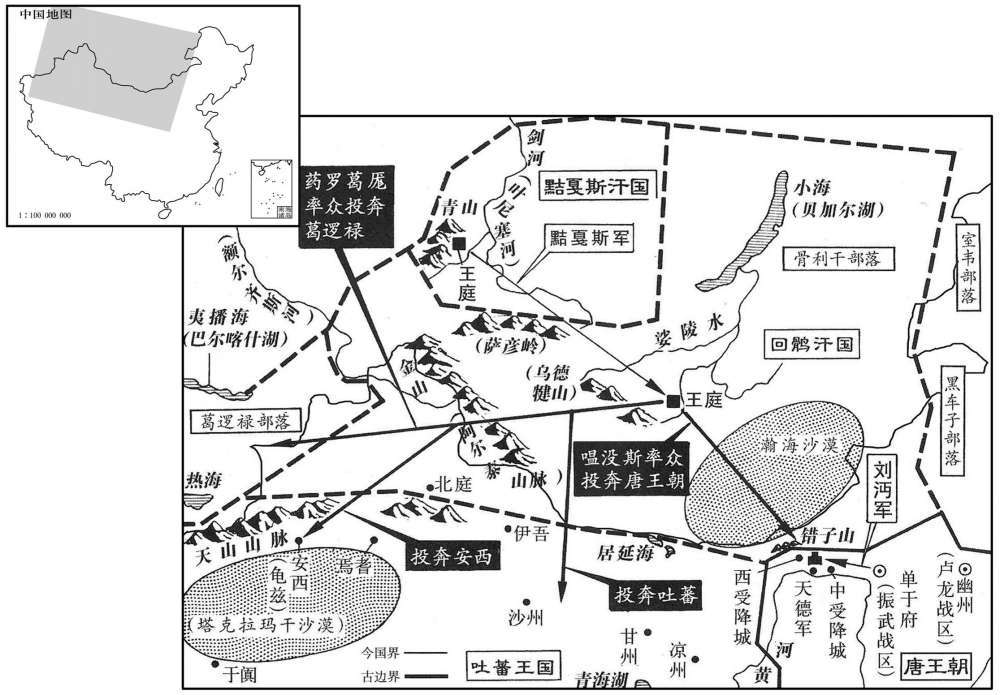

公元840年资治通鉴：本年记事、原文与白话对照
按原书编年位置阅读；追叙和史论不等于本年发生的事件。白话采用所据译本，缺译不以生成译文补齐。
卷246 · 本年记事
公元840年 · 唐文宗元圣昭献孝皇帝开成五年
五年〔（庚申、八四○）〕
本年事件索引（现代整理）
- 仇士良等矫诏改立颖王李瀍为皇太弟
- 唐文宗在太和殿驾崩
- 仇士良劝太弟赐死杨贤妃、安王李溶和陈王李成美
- 文宗大敛，武宗即位并追尊其母韦妃为皇太后
- 武宗大赦天下
- 武宗为韦太后上谥号宣懿
- 杨嗣复罢相，崔珙出任同平章事兼盐铁转运使
- 文宗葬于章陵，庙号文宗
- 李珏因山陵使任上龙輴陷落而罢为太常卿
- 义武军乱驱逐陈君赏，陈君赏率勇士返军诛乱
- 李德裕入朝拜相，杨嗣复、李珏先后罢职
- 李德裕向武宗陈述辨别邪正、委任宰相之策
- 李德裕厚待监军杨钦义，后来得到杨钦义支持
- 黠戛斯部落的来历及其与回鹘的长期战争
- 黠戛斯攻灭回鹘牙帐，回鹘诸部溃散
- 魏博节度使何进滔去世，军中推其子何重顺知留后
- 萧太后迁居兴庆宫积庆殿，号积庆太后
- 武宗前往云阳县校猎
- 裴夷直因新君即位时两省官署名漏署而出任杭州刺史
- 仇士良请求以开府官阶荫补儿子，李中敏以其谒者监身份驳回
- 武宗任命何重顺知魏博留后
- 立皇子李峻为杞王

本年形势与背景参考图
春，正月，己卯，诏立颖王瀍为皇太弟，〔瀍，直连翻。〕应军国事权令句当。〔句，古候翻。当，丁浪翻。〕且言太子成美年尚冲幼，未渐师资，〔渐，子廉翻。老子曰：善人者，不善人之师；不善人者，善人之资。〕可复封陈王。时上疾甚，命知枢密刘弘逸、薛季棱引杨嗣复、李珏至禁中，欲春太子监国。中尉仇士良、鱼弘志以太子之立，功不在己，乃言太子幼，且有疾，更议所立。〔更，工衡翻。〕李珏曰：「太子位已定，岂得中变！」士良、弘志遂矫诏立瀍为太弟。〔考异曰：唐阙史曰：「武宗帝王夫人者，燕赵倡女也，武宗为颍为，获爱亄。文宗于十六宅西别建安王溶、颍王瀍院，上数幸其中，纵酒如家人礼。及文宗晏驾，后宫无子，所立敬宗男陈王，年幼且病，未任军国事。中贵主禁掖者，以安王大行亲弟，既贤且长，遂起左、右神策军及飞龙、羽林、骁骑数千众，即藩邸奉迎安王。中贵遥呼曰：『迎大者！迎大者！』如是者数四，意以安王为兄，即大者也。及兵仗至二王宅首，兵士相语曰：『奉命迎大者，不知安、颍孰为大者﹖』王夫人窃闻之，拥髻褰裙走出，矫言曰：『大者颍王也。大家左右以王魁梧颀长，，皆呼为大王，且与中尉有死生之契，汝曹或误，必赤族矣！』时安王心云其次第合立，志少疑懦，惧未敢出。颍王神气抑扬，隐于屏间，夫人自后耸出之。众惑其语，遂扶上马，戈甲霜拥，前至少阳院。诸中贵知已误，无敢出言者，遂罗拜马前，连呼万岁。寻下诏，以颍王瀍立为皇太弟，权句当军国事。」新后妃传曰：「武宗贤妃王氏，开成末，王嗣帝位，妃阴为助画，故进号才人。」盖亦取于阙史也。按立嗣大事，岂容缪误！阙史难信，今不取从文宗、武宗实录。〕是日，士良、弘志将兵诣十六宅，迎颍王至少阳院，百官谒见于思贤殿。瀍沈毅有断，喜愠不形于色。〔见，贤遍翻。沈，持林翻。断，丁乱翻。愠，于问翻。〕与安王溶皆素为上所厚，异于诸王。
春季，正月，己卯（初二），唐文宗下诏，立颍王李为皇太弟，凡国家大事，由他全权决定。诏令又说，皇太子李成美尚年幼，没有经过老师的训导，仍封为陈王。当时，文宗病重，命知枢密刘弘逸、薛季棱引宰相杨嗣复、李珏来宫中，打算由二人辅佐太子代行皇上职权，处理朝政。左、右神策军护军中尉仇士良、鱼弘志鉴于当初立皇太子的时候，自己没有一点功劳，于是上言，说皇太子年幼，而且有病，建议废除重立。李珏说：“皇太子的地位已定，怎么能轻易改变！”于是仇士良、鱼弘志假称文宗的诏令，立李为皇太弟。当天，仇士良、鱼弘志率禁兵至十六宅宫，迎颍王李到少阳院。接着，百官在思贤殿拜见李。李性情深沉而刚毅，处理问题十分果断，喜怒不形于色。他和安王李溶，都向来为文宗所厚爱，而区别于其他皇子诸王。
辛巳，上崩于太和殿。〔年三十三。〕以杨嗣复摄耱宰。
两版字句有差异，建议核对原文。
辛巳（初四），唐文宗在太和殿驾崩。朝廷任命杨嗣复暂摄冢宰，主持治丧。
癸未，仇士良说太弟赐杨贤妃、安王溶、陈王成美死。〔说，式芮翻。考异曰：旧传曰：「安王溶，穆宗第八子，母杨贤妃。武宗即位，李德裕秉政。或告文宗崩时，杨嗣复以与贤妃宗家，欲立安王为嗣，故王受祸，复贬官。」按是时德裕未入相。今从武宗实录。〕敕大行以十四日殥，成服。〔考异曰：武宗实录：裴夷直上言，「伏见二日敕，今有司以今月十四日攒敛成服。」按文宗以四日崩，岂得二日遽有此敕！必误也。〕谏议大夫裴夷直上言期日太远，不听。时仇士良等追怨文宗，〔以甘露之事也。〕凡乐工及内侍得幸于文宗者，诛贬相继。夷直复上言：「陛下自藩维继统，是宜俨然在疚，〔记檀弓：秦穆公吊公子重耳曰：「俨然在忧服之中。」诗：闵予小子，嬛嬛在疚。注：疚，病也；在忧病之中。复，扶又翻。〕以哀慕为心，速行丧礼，早议大政，以慰天下。而未及数日，屡诛戮先帝近臣，惊率土之视听，伤先帝之神灵，人情何瞻！国体至重，若使此辈无罪，固不可刑；若其有罪，彼已在天网之内，无所逃伏，旬日之外行之何晚！」不听。
癸未（初六），仇士良劝说皇太弟李下令，命杨贤妃、安王李溶、陈王李成美自尽。李又下敕，命于本月十四日举行文宗入棺大殓的仪式，凡亲属和百官等一律穿上丧服。谏议大夫裴夷直上言大殓的日期太远，李不听。这时，仇士良等人仍怨恨文宗，于是，凡教坊的乐工和曾经被文宗宠爱的宦官，相继被诛杀或贬逐。裴夷直又上言说：“陛下由藩王的身份继承帝位，所以应当象真正忧病一样，尽心哀悼文宗皇帝，迅速举行丧礼，从而早日亲政，以便安抚天下人心。但现在文宗皇帝去世还不到几天，就多次诛杀他的亲近臣僚，以致各地的官员都被惊扰，先帝的神灵不免也被伤害。这样下去，人们会怎样看待陛下呢！现在，国家的体面最为重要，假如先帝的亲近臣僚无罪，就不应惩罚他们；假如有罪，他们已经处于国家法律的天罗地网之中，无法脱逃，等十天后先帝入棺大殓结束，再加惩罚也不晚！”李不听。
辛卯，文宗始大敛。〔大行十一日而始大敛，非礼也。敛，力赡翻。〕武宗即位。甲午追尊上母韦妃为皇太后。
辛卯（十四日），文宗的尸体正式入棺大殓。同日，武宗李即位。甲午（十七日），武宗追尊母亲韦妃为皇太后。
二月，乙卯，赦天下。
二月，乙卯（初八），唐武宗大赦天下。
丙寅，谥韦太后曰宣懿。
两版字句有差异，建议核对原文。
丙寅（十九日），唐武宗追赠母亲韦太后的谥号为宣懿。
夏，五月，己卯，门下侍郎、同平章事杨嗣复罢为吏部尚书，以刑部尚书崔珙同平章事兼盐铁转运使。〔珙，居竦翻。〕
夏季，五月，己卯（初四），唐武宗免去门下侍郎、同平章事杨嗣复的职务，任命他为吏部尚书；任命刑部尚书崔珙为同平章事兼盐铁转运使。
秋，八月，壬戍，葬元圣昭献孝皇帝于章陵，〔章陵在京兆富平县西北二十里。〕庙号文宗。
秋季，八月，壬戌（十九日），朝廷在章陵埋葬元圣昭献孝皇帝李昂，庙号为文宗。
庚午，门下侍郎、同平章事李珏坐为山陵使龙輴陷，〔輴，敕伦翻。记：天子龙輴。輴，载柩车也，画龙于辕。〕罢为太常卿。贬京兆尹敬昕为郴州司马。〔郴，丑林翻。〕
庚午（二十七日），门下侍郎、同平章事李珏因担任山陵使时，运载文宗皇帝灵枢的龙因故在半路失陷，被免去宰相职务，担任太常卿。京兆尹敬昕因此被贬为郴州司马。
义武军乱，逐节度使陈君赏。君赏募勇士数百人，复入军城，诛乱者。
义武发生军队变乱，驱逐节度使陈君赏。陈君赏招募勇士几百人，重新攻入义武的治所定州城，诛杀作乱的将士。
初，上之立非宰相意，故杨嗣复、李珏相继罢去，召淮南节度使李德裕入朝；九月，甲戍朔，至京师，丁丑，以德裕为门下侍郎、同平章事。
当初，武宗被立为皇太弟，不是出于宰相的建议。所以，武宗即位后，相继罢免宰相杨嗣复、李珏的职务，召淮南节度使李德裕来京。九月，甲戌朔（初一），李德裕抵达京城。丁丑（初四），李德裕被任命为门下侍郎、同平章事。
庚辰，德裕入谢，言于上曰：「致理之要，〔致理，犹言致治也。〕在于辩群臣之邪正。夫邪正二者，劫不相容，正人指邪人为邪，邪人亦指正人为邪，人主辩之甚难。臣以为正人如松柏，特立不倚；邪人如藤萝，非附他物不能自起。故正人一心事君而邪人竞为朋党。先帝深知受党之患，然所用卒皆朋党之人，〔卒，子恤翻。〕良由执心不定，故奸人得乘间而入也。〔间，古苋翻；下疑间同。〕夫宰相不能人人忠良，或为欺罔，主心始疑；于是旁询小臣以察执政。如德宗末年，所听任者惟裴延龄辈，宰相署敕而已，此政事所以日乱也。陛下诚能慎择贤才以为宰相，有奸罔者立黜去，〔去，羌吕翻。〕常令政事皆出中书，推心委任，坚定不移，则天下何忧不理哉！」又曰：「先帝于大臣好为形迹，〔好，呼到翻。〕小过皆含容不言，日累月积，〔累，鲁水翻。〕以至祸败。兹事大误，愿陛下以为戒！臣等有罪，陛下当面诘之。〔诘，起吉翻。〕事苟无实，得以辩明；若其有实，辞理自穷。小过则容其悛改，〔悛，丑缘翻。〕大罪则加之诛谴，如此，君臣之际无疑间矣。」上嘉纳之。
庚辰（初七），李德裕上朝向武宗谢恩。他对武宗说：“治理天下的关键，在于辨别群臣中谁是邪恶的小人，谁是正直的君子。邪恶和正直之间，难以相容。所以，君子指斥小人邪恶，而小人也指斥君子邪恶，以致皇上难以辨别。我认为，正直的君子就象松柏一样，独立生长，不必依赖别的器物。而邪恶的小人就象藤萝一样，如果不攀附其它器物，就不能自立。所以，正直的君子一心一意地侍奉皇上，而邪恶的小人则争先恐后地朋比为党。先帝文宗皇帝深知朋党的危害，然而，他所信用的官员却大多是朋党的成员。这主要是由于他自己没有主见，所以奸邪小人得以乘间而入。我认为，宰相不可能人人都是忠臣，皇上有时发现一个宰相欺骗自己，心中就开始猜疑其他宰相。于是，通过身边的侍从和宦官了解宰相的情况。例如德宗在他晚年的时候，只信任裴延龄一人，其它宰相不过在朝廷的敕书中签名而已。这是当时朝政紊乱的主要原因。陛下如果真的能谨慎地选拔德才兼备的官员担任宰相，把那些奸邪虚罔的官员立即罢免；同时，诚心诚意地委任宰相，坚定不移，凡是朝廷的政令，都由政事堂审定颁布，那么，就不必忧虑天下不会大治了。”李德裕又说：“先帝文宗皇帝在大臣面前，很注意自己的言行举止，对于群臣小的过失，一般都容忍不言。这样日积月累，以至酿成大祸。这实在是一大失误，希望陛下引以为诫。今后，如果我们有罪，陛下应该当面责问。假如事实不符，应当允许我们申辩清楚；假如确是事实，我们就会在申辩时理屈词穷。对于群臣小的过失，应当允许他们改过自新；如有大罪，则加以惩罚，甚至诛杀。这样，君臣之间就不会产生猜疑了。”武宗称赞并采纳了他的意见。
初，德裕在淮南，敕召监军杨钦义，人皆言必知枢密，德裕待之无加礼，钦义心衡之。一旦，独延钦义，置酒中堂，情礼极厚；陈珍玩数床，罢酒，皆以赠之，钦义大喜过望。行至汴州，敕复还淮南，〔复，扶又翻。〕钦义尽以所饷归之。德裕曰：「此何直！」〔言此物所直能几何也。〕卒以与之。〔卒，子恤翻。〕其后钦义竟知枢密；德裕柄用，钦义颇有力焉。〔史言李德裕亦不免由宦官以入相。〕
当初，李德裕担任淮南节度使时，朝廷曾下敕召监军杨钦义进京，人们都说杨钦义此番进京肯定会被任命为枢密使。李德裕对待杨钦义却并未增加礼节，杨钦义心中十分痛恨。一天，李德裕单独召请杨钦义，在节度使府正厅设酒为杨钦义送行，情义和礼节都极为优厚。李德裕又拿出很多珍玩陈列在几个床上，喝完酒后，全部赠送杨钦义，杨钦义大喜过望。杨钦义进京走到汴州，朝廷又下敕命他返回淮南。于是，杨钦义把李德裕赠送他的珍玩如数奉还。李德裕说：“这能值几个钱！”最后，又都赠给杨钦义。以后，杨钦义果然担任了枢密使。李德裕被任命为宰相，和杨钦义有直接关系。
初，伊吾之西，焉耆之北，有黠戛斯部落，〔黠，下八翻。戛，讫黠翻。〕即古之坚昆，唐初结骨也，后更号黠戛斯，〔结骨入贡，见二百九十八卷太宗贞观二十二年。考异曰：李德裕会昌一品集安抚回鹘制作「纥吃斯」，又作「纥于斯」。今从德裕会昌伐叛记、杜牧集、新、旧传、实录。〕干元中为回鹘所破，自是隔阂不通中国。〔阂，牛代翻。〕其君长曰阿热，建牙青山，去回鹘牙，橐驼行四十日。〔青山在剑河西。〕其人悍勇，〔悍，户罕翻，又侯旰翻。〕呈蕃、回鹘常赂遗之，〔遗，唯季翻。〕假以官号。回鹘既衰，阿热始自称可汗。回鹘遗相国将兵击之，连兵二十余年，数为黠戛斯所败，〔数，所角翻。败，补迈翻。〕詈回鹘曰：〔詈，力智翻。〕「汝运尽矣，我必取汝金帐！」金帐者，回鹘可汗所居帐也。
当初，在伊州的西方，焉耆镇的北方，有一个部落名叫黠戛斯，就是古代的坚昆，唐初的结骨，以后改名叫黠戛斯。唐肃宗乾元年间，黠戛斯被回鹘国击败。从此以后，由于回鹘阻隔，和唐朝失去联系。黠戛斯的君长称为阿热，在青山建立牙帐，距离回鹘国牙帐，骑骆驼要走四十天。黠戛斯部众剽悍勇敢，因此，吐蕃国和回鹘国常常贿赂他，并授予官位名号，加以拉拢。回鹘国衰落以后，阿热开始自称可汗。回鹘国派宰相率兵攻击黠戛斯，双方大战二十多年，回鹘国多次被黠戛斯击败。黠戛斯斥责回鹘可汗说：“你的命数已经到了尽头，我必将要夺取你的金帐！”金帐，是回鹘可汗居住的帐幕。
及掘罗勿杀彰信，立簓馺，〔事见上年。〕回鹘别将句录莫贺引黠戛斯十万骑攻回鹘，大破之，杀簓馺及掘罗勿，〔考异曰：旧传作「句录未贺」。今从新传。〕焚其牙帐荡尽，回鹘诸部逃散。其相馺职、特勒厖等十五部西奔葛逻禄，一支奔吐蕃，一支奔安西。〔逻，郎佐翻。〕可汗兄弟嗢没斯等〔嗢，乌没翻。〕及其相赤心、仆固、特勒那颉啜〔啜，枢悦翻。〕各帅其众抵天德塞下，就杂虏贸易谷食，〔帅，读曰率。贸，音茂。〕且求内附。冬，十月，丙辰，天德军使温德彝奏：「回鹘溃兵侵逼西城，〔西城，朔方西受降城也。〕亘六十里，不见其后。〔亘，横亘也。〕边人以回鹘猥至，恐惧不安。」诏振武节度使刘沔屯云迦关以备之。〔新志：单于府有云伽关。振武节度治单于府。迦，古牙翻，又居伽翻。考异曰：新传、实录作「云伽关」。今从一品集。〕
等到回鹘宰相掘罗勿杀死彰信可汗，拥立特勒为新可汗，回鹘国一个名叫录莫贺的偏将勾引黠戛斯十万骑兵攻打掘罗勿，结果，大败他的兵马，杀死和掘罗勿，把回鹘国的牙帐焚烧殆尽。回鹘国的各个部落四散逃亡，宰相职、特勒等十五个部落往西方逃跑，投奔葛逻禄；另有一支投奔吐蕃国；一支逃到安西。回鹘可汗的兄弟没斯等人，以及宰相赤心、仆固、特勒那颉啜，各率自己的部落兵马抵达唐朝天德军的边塞一带，依靠和杂居这一地区的各族部落贸易而生活。同时，请求归附唐朝。冬季，十月，丙辰（十四日），天德军使温德彝奏报：“回鹘国的逃兵侵逼西受降城，逃兵连绵六十里，看不到尾。边防的居民由于回鹘国的逃兵大举侵扰，都恐惧不安。”唐武宗下诏，命振武节度使刘沔出兵屯守于迦关以防回鹘。
魏博节度使何进薨，军中推其子都知兵马使重顺知留后。
魏博节度使何进滔去世，军中将士推举他的儿子都知兵马使何重顺为留后。
萧太后徙居兴庆宫积庆殿，号积庆太后。〔萧太后，文宗之母。〕
萧太后迁居到兴庆宫积庆殿，尊号为积庆太后。
十一月，癸酉朔，上幸云阳校猎。
十一月，癸酉朔（初一），唐武宗前往云阳县围猎。
故事，新天子即位，两省官同署名。上之即位也，谏议大夫裴夷直漏名，由是出为杭州刺史。〔考异曰：新传曰：「武宗立，夷直视册牒不肯署。」今从武宗实录。〕
按照惯例，新皇帝即位时，中书、门下两省的官员在册书上共同署名。唐武宗即位时，谏议大夫裴夷直的名字遗漏，由此而被调出朝廷，担任杭州刺史。
开府仪同三司、左卫上将军兼内谒者监仇士良请以开府荫其子为千牛，〔唐制：千牛备身掌执御刀，服花钿绣，衣绿，执象笏，宿卫侍从。宋白曰：唐制：千牛、进马，并系资荫。〕给事中李中敏判曰：「开府阶诚宜荫子，〔唐制：从五品以上皆得荫子。开府从一品，宜得荫子。〕谒者监何由有儿﹖」士良惭恚。〔恚，于避翻。〕李德裕亦以中敏为杨嗣复之党，恶之，〔恶，乌路翻。〕出为婺州刺史。〔婺州，春秋越之西界，汉为会稽郡乌伤县地。吴置东阳郡，陈置缙州。隋平陈为吴州，以其地于天文为婺女之分，改婺州。京师东南四千七百里。婺，亡遇翻。〕
开府仪同三司、左卫上将军兼内谒者监仇士良请求朝廷批准，根据自己的官爵等级，授予儿子千牛备身的职务。给事中李中敏批文说：“按照开府仪同三司的品级，应当授予他的儿子官位，但仇士良作为宦官，怎么能有儿子呢？”仇士良惭愧而愤怒。李德裕也因为李中敏是杨嗣复的党羽，因而厌恶他，把他调出朝廷担任婺州刺史。
十二月，庚申，以何重顺知魏博留后事。
十二月，庚申（十八日），唐武宗任命何重顺为魏博留后。
立皇子峻为杞王。
唐玄宗立儿子李峻为杞王。